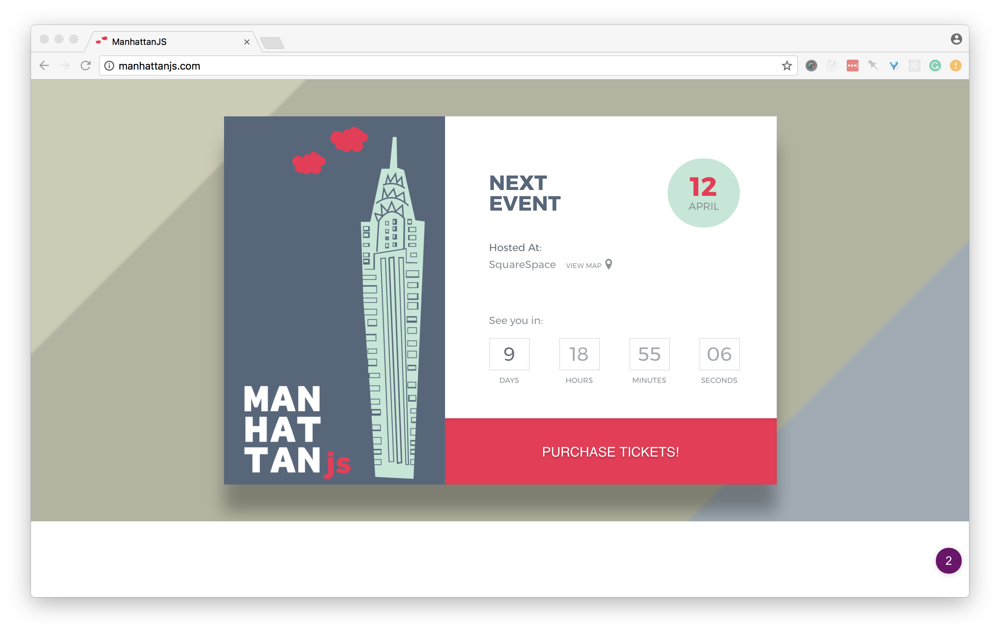

<!doctype html>
<html lang="en">
    <head>
        <meta charset="utf-8">
        <title>Hiring Patterns for Candidates</title>
        <link rel="stylesheet" href="./css/reveal.css">
        <link rel="stylesheet" href="./css/theme/black.css" id="theme">
        <link rel="stylesheet" href="./css/highlight/zenburn.css">
        <link rel="stylesheet" href="./css/print/paper.css" type="text/css" media="print">

    </head>
    <body>

        <div class="reveal">
            <div class="slides"><section ><section data-markdown><script type="text/template">

# Hiring Patterns for Candidates

Claudina Sarahe, [@itsmisscs](https://twitter.com/itsmisscs)
</script></section><section data-markdown><script type="text/template">
## My Preferred Gender Pronoun (PGP)

she/her/they/them


</script></section><section data-markdown><script type="text/template">
## <span class="highlight">What I Do:</span> Independent Consultant

Product, Strategy, Team Building, Development, Training

<aside class="notes"><p>help scale products and teams. i work a lot
between design and development but also management and leadership. holistic.</p>
</aside></script></section><section data-markdown><script type="text/template">
# 12 years professionally

<aside class="notes"><p>Untraditional path, too</p>
</aside></script></section><section data-markdown><script type="text/template">
# Things I've done

* Consulting Director Frontend Engineering, Casper<!-- .element: class="fragment" data-fragment-index="1" -->
* Co-creator SassConf, Conference for Front-end<!-- .element: class="fragment" data-fragment-index="2" -->
* Co-founder and alumna organizer GothamSass<!-- .element: class="fragment" data-fragment-index="3" -->
* Co-founder Autotax. Y Combinator Finalist<!-- .element: class="fragment" data-fragment-index="4" -->

<aside class="notes"></aside></script></section><section data-markdown><script type="text/template">
# Passion Projects

* Learning Portuguese
* Woodworking
</script></section></section><section  data-markdown><script type="text/template">
# Outline: This workshop

* Why I'm passionate about hiring, teams, organizations
* Ways to Prepare
* Invest in Learning

<aside class="notes"><p>Experiences from hiring at high growth startups and learnings from organizing, work in worker-owner models, agency...</p>
</aside></script></section><section ><section data-markdown><script type="text/template">
## Sustaining inclusive and diverse teams begin with inclusive processes

<aside class="notes"><p>You are what you eat adage holds true. I believe that an
in order to have an enjoyable hiring process that yields diverse, inclusive, creative, productive teams you must
have an inclusive process. process indicative of the team.</p>
</aside></script></section><section data-markdown><script type="text/template">
## Hiring process reflects character of team

<aside class="notes"></aside></script></section></section><section ><section data-markdown><script type="text/template">
## Shows the color of the company culture
</script></section><section data-markdown><script type="text/template">
## Hiring is dialogue between potential candidates and team

Leveling of the power structure

<aside class="notes"><p>You learn about them while they also learn about you. Key to know your position (tenets, talk about later). Or maybe more like</p>
</aside></script></section></section><section  data-markdown><script type="text/template">
## Companies aren't always getting it right


<aside class="notes"><p>all too often the hiring process is horrible
soul wrenching experience. it is this way for everyone.</p>
</aside></script></section><section ><section data-markdown><script type="text/template">
# First Steps

* Define your tenets<!-- .element: class="fragment" data-fragment-index="1" -->
* Do your research<!-- .element: class="fragment" data-fragment-index="2" -->

<aside class="notes"><p>Tenets drive research</p>
</aside></script></section><section data-markdown><script type="text/template">
# Defining your tenets

* What do you hold valuable in a role?<!-- .element: class="fragment" data-fragment-index="1" -->
* What do you want out of the position?<!-- .element: class="fragment" data-fragment-index="2" -->
* What's most important to you—mentorship?<!-- .element: class="fragment" data-fragment-index="3" -->

<aside class="notes"><p>What values do you want out of a place to work. If you can, prioritize them. What do you want to get out of the job? clear: room to grow, better process; for a new dev could be get a job on respectful teams. Pause to let
students define tenets. Work life balance. Perks? Remote or ability to work from home. Flexibility.</p>
</aside></script></section></section><section ><section data-markdown><script type="text/template">
# Put time into research

<aside class="notes"><p>Helps you come prepared. Depends on your first touch, how you are getting to meet. Questions for hiring managers, phone screens. Ask for thinigs you don&#39;t get.</p>
</aside></script></section><section data-markdown><script type="text/template">
# Detective Work

Don't be shy, reach out to people.

<aside class="notes"><p>Reach out to employees on Twitter or at Meetups to help you learn more. Linkedin.</p>
</aside></script></section><section data-markdown><script type="text/template">
## Researching the team

- Social media presence<!-- .element: class="fragment" data-fragment-index="1" -->
- Team page / About us page<!-- .element: class="fragment" data-fragment-index="2" -->
  - Imagery<!-- .element: class="fragment" data-fragment-index="3" -->
  - Language and tone of the content<!-- .element: class="fragment" data-fragment-index="4" -->
- Participation in the community (OSS, Meetups, Conferences)<!-- .element: class="fragment" data-fragment-index="5" -->

<aside class="notes"><p>Use your tenets to help you organize your research. For example, if you
value learning, did you find any information about learning? If not, add that to list of questions to ask the company (if interviewing) or people that work there</p>
</aside></script></section><section data-markdown><script type="text/template">
## Ask about day to day

* What's the process for a typical feature or sprint?<!-- .element: class="fragment" data-fragment-index="1" -->
* How do you spend your day?<!-- .element: class="fragment" data-fragment-index="2" -->
* What does a typical day for team member look like?<!-- .element: class="fragment" data-fragment-index="3" -->

<aside class="notes"><p>Ask about someone at your level and also ask above is you are looking to grow</p>
</aside></script></section><section data-markdown><script type="text/template">
## Ask about mentorship and career growth

* Pairing <!-- .element: class="fragment" data-fragment-index="1" -->
* Code review process <!-- .element: class="fragment" data-fragment-index="2" -->
* How are code decisions and standards formed? <!-- .element: class="fragment" data-fragment-index="3" -->
* Learning budget—encouraged to learn<!-- .element: class="fragment" data-fragment-index="4" -->
* Developer ratio (Junior to Senior)<!-- .element: class="fragment" data-fragment-index="5" -->
* Tech stack<!-- .element: class="fragment" data-fragment-index="6" -->

<aside class="notes"><p>Care about your growth. Answers revel the team and type of environment. clues that help you rank
against your tenets.</p>
</aside></script></section></section><section  data-markdown><script type="text/template">
# Be open to new languages

<aside class="notes"><p>While knowing and going after what you want is important. Sometimes the way in is with something else that opens a portal. Is one of your tenets to
learn?</p>
</aside></script></section><section ><section data-markdown><script type="text/template">
## Reflections on starting out

* Creating French graphics in Photoshop<!-- .element: class="fragment" data-fragment-index="1" -->
* Manual data entry and small bug fixes<!-- .element: class="fragment" data-fragment-index="2" -->
</script></section><section data-markdown><script type="text/template">
## One day, my own small independent project

<aside class="notes"><p>Nice segue way to...</p>
</aside></script></section></section><section ><section data-markdown><script type="text/template">
# Preparing for code challenge

<aside class="notes"><p>Code challenges. Different everywhere. Vary a lot by team. I
believe that they are important clues to org and team structure</p>
</aside></script></section><section data-markdown><script type="text/template">
# Timed challenges

Practice, practice, practice.

<aside class="notes"><p>JavaScript 30 Challenge, Daily exercises</p>
</aside></script></section><section data-markdown><script type="text/template">
# Take home challenge

<aside class="notes"><p>Go go over more in detail</p>
</aside></script></section><section data-markdown><script type="text/template">
# ~~Whiteboarding~~

<aside class="notes"><p>You are not alone in thinking these are horrible</p>
</aside></script></section><section data-markdown><script type="text/template">
## Repos of companies that do not whiteboard


</script></section><section data-markdown><script type="text/template">
### If if you do end in front of one...

- Test your logic and reasoning
- Talk through your thoughts

<aside class="notes"><p>Personal opinions. Practice narrating answers. Peer code review.</p>
</aside></script></section></section><section ><section data-markdown><script type="text/template">
# Tips for Take Home Code Challenges

(helpful for other challenges, too)

<aside class="notes"><p>I&#39;m a proponent of take home code challenges. while they can take longer they offer a better view of the candidate</p>
</aside></script></section><section data-markdown><script type="text/template">
## Biggest challenge:

- More realistic of feature work<!-- .element: class="fragment" data-fragment-index="1" -->
- Higher expectation based on time<!-- .element: class="fragment" data-fragment-index="1" -->
- Make a schedule<!-- .element: class="fragment" data-fragment-index="1" -->
- Clarify any directions after you receive it<!-- .element: class="fragment" data-fragment-index="1" -->
- Communicate if you need more time<!-- .element: class="fragment" data-fragment-index="1" -->
- Be ready to communicate your choices and direction<!-- .element: class="fragment" data-fragment-index="1" -->
</script></section><section data-markdown><script type="text/template">
## Provide a `recap.md`

Your opportunity to give a bit more context into your code challenge

* What went well? <!-- .element: class="fragment" data-fragment-index="1" -->
* What would you improve given/more time resources?<!-- .element: class="fragment" data-fragment-index="2" -->
* Do you have any feedback on the challenge (what would you change, improve, keep…)?<!-- .element: class="fragment" data-fragment-index="3" -->

<aside class="notes"><p>Anecdote about how got this from a candidate. These are great way to
provide more perspective about your work. Mini standup/down</p>
</aside></script></section></section><section  data-markdown><script type="text/template">
## Documentation: Does your project include a `README.md`?

<aside class="notes"><p>how detailed does it get. if you do something different, note it. documentation helps people.</p>
</aside></script></section><section ><section data-markdown><script type="text/template">
# Directory Organization

<aside class="notes"><p>Lots of patterns here. Here&#39;s good vs signs of lack of organization</p>
</aside></script></section><section data-markdown><script type="text/template">
## Common patterns

Within the root folder:

* Core code files: `src/` or `app/`
* Compiled files: `dist`, `public/`, `build/`
</script></section><section data-markdown><script type="text/template">
### Example: Good Directory Structure

```
app
├── js
│   │── vendor/
│   │   ├── jquery.js
│   └── main.js
├── css
│   └── main.css
├── views
│   └── index.html
├──
dist
├── // compiled assets

```
</script></section></section><section ><section data-markdown><script type="text/template">
## Consistency & Readability

- Spacing, indentation <!-- .element: class="fragment" data-fragment-index="1" -->
- Naming <!-- .element: class="fragment" data-fragment-index="2" -->
  - File names <!-- .element: class="fragment" data-fragment-index="3" -->
  - Classes, functions<!-- .element: class="fragment" data-fragment-index="4" -->
- Documentation <!-- .element: class="fragment" data-fragment-index="5" -->
* Stale code (e.g. commented out) <!-- .element: class="fragment" data-fragment-index="6" -->

<aside class="notes"></aside></script></section><section data-markdown><script type="text/template">
## Code documentation

JSDOC style syntax across all file types


</script></section><section data-markdown><script type="text/template">
## Linters & Code/Style Guidelines

* Plugins available for most editors
</script></section><section data-markdown><script type="text/template">
## ESLint


<aside class="notes"><p>Pluggable different standards</p>
</aside></script></section><section data-markdown><script type="text/template">
## AirBnb Code Standards


</script></section><section data-markdown><script type="text/template">
## Lots of standards

* [JS Standard](https://github.com/feross/standard)
* [Google](https://github.com/google/eslint-config-google)
</script></section><section data-markdown><script type="text/template">
### Harry Roberts, CSS Guidelines


</script></section><section data-markdown><script type="text/template">
## Hugu G, Sass Guidelines


</script></section><section data-markdown><script type="text/template">
## MDO, Code Guide


</script></section><section data-markdown><script type="text/template">
## Stylelint


</script></section><section data-markdown><script type="text/template">
## csscomb


</script></section><section data-markdown><script type="text/template">
## Other CSS/Sass Linters

* [Sass-lint](https://github.com/sasstools/sass-lint)
* [SCSS Lint](https://github.com/brigade/scss-lint)
</script></section></section><section  data-markdown><script type="text/template">
## Naming is hard

Be a great artist, steal and remix from other frameworks

<aside class="notes"><p>Check out semantic UI or frameworks for ideas. visit sites you like.</p>
</aside></script></section><section  data-markdown><script type="text/template">
## Master Patterns

* JavaScript Design Patterns
* Functional Programming
</script></section><section ><section data-markdown><script type="text/template">
## Command & Understanding of HTML

* Are you using the most semantically appropriate element? <!-- .element: class="fragment" data-fragment-index="1" -->
* Is accessibility a fore or afterthought? <!-- .element: class="fragment" data-fragment-index="2" -->

<aside class="notes"><p>Very challenging. Area of most difficulty.</p>
</aside></script></section><section data-markdown><script type="text/template">
## #1: Know your tags

```
<div class="price">
  ${{ price }}
</div>
```
</script></section><section data-markdown><script type="text/template">
## Answer: Daily Double

```
<label name="price-field">Cost</label>
<output for="price-field" name="price" class="price">
  ${{ price }}
</output>
```

Represents the result of a calculation or user action.

<aside class="notes"><p>Okay. Esoteric. But this isn&#39;t..</p>
</aside></script></section><section data-markdown><script type="text/template">
```
<div class="btn">
  Get it
</div>
```

## `<div>` is not `<button>`
</script></section><section data-markdown><script type="text/template">
## #2: Know Your Tags

_(HTML is more than divs)_

```html
<div class='item'>
  <div class='item__name'>{{ name }}</div>
  <div class='item_description'>{{ description }}</div>
  <div class='item_price'>{{ price }}</div>
  <div class='item__purchase' data-name='{{ name }}' data-price='{{ price }}'>
    <div class='btn'>
      Get it
    </div>
  </div>
</div>
```
</script></section><section data-markdown><script type="text/template">
```html
<article class='item'>
  <h2 class='item__name'>{{ name }}</h2>
  <p class='item_description'>{{ description }}</p>
  <output for="price-field" name="price" class="price">${{ price }}</output>
  <div class='item__purchase' data-name='{{ name }}' data-price='{{ price }}'>
    <button class='btn'>
        Get it
    </button>
  </div>
</article>
```
</script></section></section><section ><section data-markdown><script type="text/template">
# Accessibility

* Understanding of A and AA
* Aria roles and patterns

<aside class="notes"><p>Look at libraries for clues. Some people worth following in the field</p>
</aside></script></section><section data-markdown><script type="text/template">
## [Heydon works Practical Accessibility](http://heydonworks.com/practical_aria_examples/)


</script></section><section data-markdown><script type="text/template">
## [Marcy Sutton](http://heydonworks.com/practical_aria_examples/)


</script></section></section><section ><section data-markdown><script type="text/template">
# CSS

* Understanding of specificity<!-- .element: class="fragment" data-fragment-index="1" -->
* CSS Architecture<!-- .element: class="fragment" data-fragment-index="2" -->
* Organization<!-- .element: class="fragment" data-fragment-index="3" -->
* Style<!-- .element: class="fragment" data-fragment-index="4" -->
</script></section><section data-markdown><script type="text/template">
```
button.delete {

}
```

## Over-qualifying elements
<!-- .element: class="fragment" data-fragment-index="1" -->
</script></section><section data-markdown><script type="text/template">
## Do you style IDs?

[NAY]()<!-- .element: class="fragment" data-fragment-index="1" -->
</script></section><section data-markdown><script type="text/template">
## Empty Rule Sets

Don't leave empty rulesets

```
.price {
}
```
</script></section><section data-markdown><script type="text/template">
## Know your CSS units

Show consistency or understanding of usage patterns

```
.sidebar {
  margin-left: 3%;
  padding: 1.5em 40px;
}
```

<aside class="notes"><p>Understand what power each unit gives you and why to use it</p>
</aside></script></section><section data-markdown><script type="text/template">


<aside class="notes"><p>you still keep px size adjustments at the document level so you can make
easy/efficient sweeping size changes. But then each module on the page has
a font-size set in rem. Actual text elements (h1, h2, p, li, whatever),
if you size them at all, are sized in em, and thus become relative to the module.</p>
</aside></script></section><section data-markdown><script type="text/template">
## Use Autoprefixer for vendor prefixing

No need to handwrite vendor prefixes.

```css
@mixin box-sizing( $type: border-box ) {
    -webkit-box-sizing: $type;
       -moz-box-sizing: $type;
         -o-box-sizing: $type;
        -ms-box-sizing: $type;
            box-sizing: $type;
}

*,
*::before,
*::after {
  @include box-sizing(border-box);
}
```

<aside class="notes"><p>If you are using a build process. Autoprefixer is available for most build processes</p>
</aside></script></section><section data-markdown><script type="text/template">
```css
@mixin box-sizing( $type: border-box ) {
  box-sizing: $type;
}

*,
*::before,
*::after {
  @include box-sizing(border-box);
}
```
</script></section><section data-markdown><script type="text/template">
## CSS Architecture

Structure and design of your code

<aside class="notes"><p>some are more about styles and less prescriptive about organization. others are more coupled.</p>
</aside></script></section><section data-markdown><script type="text/template">
## CSS Patterns

* OOCSS <!-- .element: class="fragment" data-fragment-index="1" -->
* SMACSS <!-- .element: class="fragment" data-fragment-index="2" -->
* BEM <!-- .element: class="fragment" data-fragment-index="3" -->
* CSS Modules <!-- .element: class="fragment" data-fragment-index="4" -->
* ITCSS <!-- .element: class="fragment" data-fragment-index="5" -->
* ExpressiveCSS <!-- .element: class="fragment" data-fragment-index="6" -->
* FunctionalCSS <!-- .element: class="fragment" data-fragment-index="7" -->
</script></section></section><section ><section data-markdown><script type="text/template">
# React CSS Patterns

* CSS Modules
* Styled Components
</script></section><section data-markdown><script type="text/template">
# Gulp.js for making builds

* Easy to grok <!-- .element: class="fragment" data-fragment-index="1" -->
* Lots of tutorials <!-- .element: class="fragment" data-fragment-index="2" -->
* More intuitive working with HTML templates <!-- .element: class="fragment" data-fragment-index="3" -->
* Gulp 4.0.0 is stagnant :(<!-- .element: class="fragment" data-fragment-index="4" -->
</script></section><section data-markdown><script type="text/template">
### But isn't Webpack the thing?!?!

<aside class="notes"><p>Yes, important to know it. But also what tool is best for the job. Example, building a static static (.html pages)</p>
</aside></script></section><section data-markdown><script type="text/template">
## Avoid coupling HTML + JS

```
$(".cart .count").html(count);
$(".cart .total").html(total);
```

<aside class="notes"><p>Going to refactor.... better</p>
</aside></script></section><section data-markdown><script type="text/template">
## Use JS Selectors

```
$(".js-cart .js-count").html(count);
$(".js-cart__count").html(count);
```
</script></section></section><section  data-markdown><script type="text/template">
# Misc Tidbits
</script></section><section ><section data-markdown><script type="text/template">
## Your writing says a lot about you

- Proofread, eg. Grammarly
- Get opinions
</script></section><section data-markdown><script type="text/template">
## Always test your code before submitting

Avoid the dreaded `-g`

* Wipe your node modules<!-- .element: class="fragment" data-fragment-index="1" -->
* Re-install node version<!-- .element: class="fragment" data-fragment-index="2" -->
* Ask a friend to try out<!-- .element: class="fragment" data-fragment-index="3" -->
</script></section><section data-markdown><script type="text/template">
## Manage node versions with `nvmrc`

Or, `n`. Both are good options.
</script></section></section><section ><section data-markdown><script type="text/template">
## Give credit were it is due
### We all copy pasta

<aside class="notes"><p>Include license files or mentions in code comments. Add mention in your
readme. This also shows that you keep up.</p>
</aside></script></section><section data-markdown><script type="text/template">
# First touch says a lot

<aside class="notes"><p>How did they reach to you? How did they treat you? Did they respect your time?</p>
</aside></script></section><section data-markdown><script type="text/template">
## Follow up if they say "Right fit later".

<aside class="notes"><p>So many people I wanted to hire but needed to wait until there was stability. Be sincere about this by working with TS to keep in touch. As candidate, if you really liked it, follow up, even if you do get a job. If no movement after 6 months, tell candidate.</p>
</aside></script></section><section data-markdown><script type="text/template">
## Get feedback by asking for it

<aside class="notes"><p>Candidates, ask for feedback. What&#39;s one things I could improve on my test? If tenets, feedback becomes really easy to give.</p>
</aside></script></section><section data-markdown><script type="text/template">
## Find your niche

* Refactoring
* Performance
* Responsive Images
* Animations

<aside class="notes"><p>Each area has sub-components</p>
</aside></script></section><section data-markdown><script type="text/template">
## Show your drive & passion

<aside class="notes"></aside></script></section></section><section ><section data-markdown><script type="text/template">
> I'm still learning - Michael Angelo

<aside class="notes"><p>An invest in learning shows that you are serious about advancing</p>
</aside></script></section><section data-markdown><script type="text/template">
# Invest in learning
</script></section><section data-markdown><script type="text/template">
# Master core languages of our craft

JS, CSS, HTML

<aside class="notes"><p>We valued JS, CSS, HTML. I stand that a good developer can and will know everything. I will forever always test core languages over frameworks. I really think it depends where you are applying</p>
</aside></script></section><section data-markdown><script type="text/template">
# How do you keep up with the industry?

<aside class="notes"><p>If a scientist doesn&#39;t keep up with research in their field,
they will become obsolete. This was one of my pass/fail questions. Why? If you
are not invested in learning, you will not be an active team member.</p>
</aside></script></section><section data-markdown><script type="text/template">
## Find your method

* Digest Lists & Newsletter
* Podcasts
* Meetups
* Conferences (volunteer at them)
* Twitter accounts and lists
* Slack groups
* Medium
* Books
</script></section><section data-markdown><script type="text/template">
* Panda
* Awesome list repos
* Callback Women
* League of Lady Coders
* GothamSass
</script></section><section data-markdown><script type="text/template">
# Meetups & Events

From Meetup.com and beyond. Psst, lurk on Twitter.
</script></section><section data-markdown><script type="text/template">
## BoroughJS Family of Meetups

* BrooklynJS
* QueensJS
* ManhttanJS
* JerseyScript
* Nodebots
</script></section><section data-markdown><script type="text/template">
### [ManhttanJS]()



[Twitter]()
</script></section><section data-markdown><script type="text/template">
### [BrooklynJS]()


[Twitter]()
</script></section><section data-markdown><script type="text/template">
### [JerseyScript]()


[Twitter]()
</script></section><section data-markdown><script type="text/template">
### Nodebots]()


[Twitter]()
</script></section></section><section ><section data-markdown><script type="text/template">
# Reading
</script></section><section data-markdown><script type="text/template">
## [Sidebar.io](sidebar.io) Design Newsletter


</script></section><section data-markdown><script type="text/template">
## Hack the industry pulse with conference videos

* Bleeding edge. Hottest. (0-18 months)
* Best practices (3+ years)
* What’s on the mind of the community?

<aside class="notes"></aside></script></section><section data-markdown><script type="text/template">
## Setup a simple build process

* Process CSS <!-- .element: class="fragment" data-fragment-index="1" -->
* Transpile JavaScripts <!-- .element: class="fragment" data-fragment-index="2" -->
* Compile HTML Templates <!-- .element: class="fragment" data-fragment-index="3" -->
* Minify and prepare for production <!-- .element: class="fragment" data-fragment-index="4" -->
</script></section></section><section ><section data-markdown><script type="text/template">
## Make your own portfolio site
</script></section><section data-markdown><script type="text/template">
## Local small-business or organization in your neighborhood

<aside class="notes"><p>my first site was for a professor</p>
</aside></script></section><section data-markdown><script type="text/template">
## Javascript 30 Challenge


</script></section><section data-markdown><script type="text/template">
## http://bit.ly/awesomecasts
</script></section><section data-markdown><script type="text/template">
## Toolsday.io
</script></section><section data-markdown><script type="text/template">
## Teach and/or Volunteer for local code programs
</script></section><section data-markdown><script type="text/template">
### BlackGirlsCode NYC


</script></section><section data-markdown><script type="text/template">
### Coder Dojo NYC


</script></section><section data-markdown><script type="text/template">
## Contribute to OSS project

- Many have https://github.com/MunGell/awesome-for-beginners
</script></section><section data-markdown><script type="text/template">
## Show activity

* Are you going to meetups?<!-- .element: class="fragment" data-fragment-index="1" -->
* Do you have code examples?<!-- .element: class="fragment" data-fragment-index="2" -->
</script></section><section data-markdown><script type="text/template">
## Pulse

(Remember, a solid foundation is required to build a tower)

* Async/wait<!-- .element: class="fragment" data-fragment-index="1" -->
* CSS Grids<!-- .element: class="fragment" data-fragment-index="2" -->
* Immutable Data Structures<!-- .element: class="fragment" data-fragment-index="3" -->
* Functional all the things<!-- .element: class="fragment" data-fragment-index="4" -->
* Flexbox<!-- .element: class="fragment" data-fragment-index="5" -->
* Progressive Web Apps<!-- .element: class="fragment" data-fragment-index="6" -->
* Design Systems<!-- .element: class="fragment" data-fragment-index="7" -->
* Performance<!-- .element: class="fragment" data-fragment-index="8" -->
</script></section></section><section  data-markdown><script type="text/template">
# Feedback & Questions
</script></section></div>
        </div>

        <script src="./lib/js/head.min.js"></script>
        <script src="./js/reveal.js"></script>

        <script>
            function extend() {
              var target = {};
              for (var i = 0; i < arguments.length; i++) {
                var source = arguments[i];
                for (var key in source) {
                  if (source.hasOwnProperty(key)) {
                    target[key] = source[key];
                  }
                }
              }
              return target;
            }

            // Optional libraries used to extend on reveal.js
            var deps = [
              { src: './lib/js/classList.js', condition: function() { return !document.body.classList; } },
              { src: './plugin/markdown/marked.js', condition: function() { return !!document.querySelector('[data-markdown]'); } },
              { src: './plugin/markdown/markdown.js', condition: function() { return !!document.querySelector('[data-markdown]'); } },
              { src: './plugin/highlight/highlight.js', async: true, callback: function() { hljs.initHighlightingOnLoad(); } },
              { src: './plugin/zoom-js/zoom.js', async: true },
              { src: './plugin/notes/notes.js', async: true },
              { src: './plugin/math/math.js', async: true }
            ];

            // default options to init reveal.js
            var defaultOptions = {
              controls: true,
              progress: true,
              history: true,
              center: true,
              transition: 'default', // none/fade/slide/convex/concave/zoom
              dependencies: deps
            };

            // options from URL query string
            var queryOptions = Reveal.getQueryHash() || {};

            var options = {"transition":"slide"};
            options = extend(defaultOptions, options, queryOptions);
            Reveal.initialize(options);
        </script>
        
    </body>
</html>
